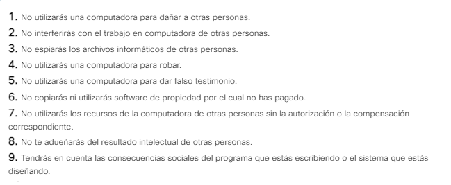

Vulnerabilidades y amenazas comunes a los usuarios.
El dominio de usuario incluye a los usuarios que acceden al sistema de información de la organización. Los usuarios pueden ser empleados, clientes, contratistas empresariales y otros individuos que deben acceder a los datos. Los usuarios generalmente son el eslabón más débil en los sistemas de seguridad informática y representan una amenaza importante para la confidencialidad,
la integridad y la disponibilidad de los datos de la organización.
A menudo, las prácticas de usuario riesgosas o deficientes socavan incluso hasta el mejor sistema de seguridad. Las siguientes son amenazas comunes a los usuarios presentes en muchas organizaciones:
-
Ningún reconocimiento de la seguridad: Los usuarios deben conocer los datos confidenciales, las políticas y los procedimientos de seguridad, las tecnologías y las contramedidas proporcionados para proteger la información y los sistemas de información.
-
Políticas de seguridad mal aplicadas: Todos los usuarios deben conocer las políticas de seguridad y las consecuencias del cumplimiento de las políticas de la organización.
-
Robo de datos: El robo de datos por parte de los usuarios tiene un costo financiero para las organizaciones; Esto genera daños en la reputación de las organizaciones o supone una responsabilidad legal asociada a la divulgación de información confidencial.
-
Descargas no autorizadas: Muchas infecciones y ataques a redes y estaciones de trabajo se remontan a los usuarios que descargan correos electrónicos, fotos, música, juegos, aplicaciones, programas y videos no autorizados en las estaciones de trabajo, las redes o los dispositivos de almacenamiento.
-
Medios no autorizados: El uso de medios no autorizados como CD, unidades USB y dispositivos de almacenamiento en red pueden provocar infecciones y ataques de malware.
-
VPN no autorizadas: Las VPN pueden ocultar el robo de información no autorizada. La encriptación que normalmente se usa para proteger la confidencialidad no permite que el personal de seguridad de TI vea la transmisión de datos sin la debida autorización.
-
Sitios web no autorizados: El acceso a sitios web no autorizados puede representar un riesgo para los datos del usuario, los dispositivos y la organización. Muchos sitios web solicitan a los visitantes que descarguen scripts o complementos que contienen código malicioso o adware. Algunos de estos sitios pueden apoderarse de dispositivos, como cámaras, y aplicaciones.
-
Destrucción de sistemas, aplicaciones o datos: La destrucción accidental o deliberada; O el sabotaje de sistemas, aplicaciones y datos supone un gran riesgo para todas las organizaciones. Los activistas, los empleados descontentos y los competidores del sector pueden eliminar datos, destruir dispositivos o configurar mal los dispositivos para que no pueda disponerse de los datos y los sistemas de información.
Manejo de las amenazas a los usuarios.
Las organizaciones pueden implementar diversas medidas para manejar las amenazas a los usuarios:
-
Realizar capacitaciones de reconocimiento de seguridad mostrando carteles de reconocimiento de seguridad, insertando recordatorios en anuncios de saludo y enviando recordatorios por correo electrónico a los empleados.
-
Educar a los usuarios anualmente sobre las políticas, los manuales de personal y las actualizaciones de guías.
-
Vincular el reconocimiento de seguridad con los objetivos de revisión del rendimiento.
-
Habilitar la detección del antivirus y el filtrado de contenido para los archivos adjuntos por correo electrónico.
-
Utilizar el filtrado de contenido para aceptar o rechazar nombres de dominio específicos conforme a las políticas de uso aceptable (AUP).
-
Deshabilitar los puertos USB y las unidades de CD internas.
-
Habilitar el análisis antivirus automático para medios insertados, archivos y adjuntos por correo electrónico.
-
Restringir el acceso a los usuarios a solo aquellos sistemas, aplicaciones y datos necesarios para realizar el trabajo.
-
Minimizar los permisos de escritura/eliminación del propietario de datos únicamente.
-
Seguir y controlar el comportamiento anormal de los empleados, el rendimiento laboral errático y el uso de la infraestructura de TI en horarios no laborales.
-
Implementar procedimientos de bloqueo del control de acceso basados en el monitoreo y el cumplimiento de las AUP.
-
Habilitar el sistema de detección de intrusiones y el sistema de prevención de intrusiones (IDS/IPS) que monitorean los accesos y puestos confidenciales de los empleados.
La tabla siguiente, une las amenazas al dominio de usuario con las contramedidas usadas para manejarlas.
Amenazas comunes a los dispositivos
Un dispositivo es cualquier equipo PC, portátil, tablet o smartphone que se conecta a la red.
La siguiente lista son amenazas a los dispositivos:
-
Estaciones de trabajo desatendidas: Las estaciones de trabajo que se dejan encendidas y desatendidas representan un riesgo de acceso no autorizado a los recursos de la red.
-
Descargas del usuario: Los archivos, las fotos, la música o los vídeos descargados pueden ser un vehículo para el código malicioso.
-
Software sin parches: las vulnerabilidades en la seguridad del software ofrecen debilidades que los ciberdelincuentes pueden aprovechar.
-
Malware: Nuevos virus, gusanos y otros códigos maliciosos salen a la luz diariamente.
-
Medios no autorizados: Los usuarios que insertan unidades de CD, DVD o USB pueden introducir malware o correr el riesgo de comprometer los datos almacenados en la estación de trabajo.
-
Violación de la política de uso aceptable: Las políticas existen para proteger la infraestructura de TI de la organización.
Manejo de las amenazas a los dispositivos.
Las organizaciones pueden implementar diversas medidas para manejar las amenazas a los dispositivos.
-
Establecer políticas para los umbrales de bloqueo y protección de contraseñas en todos los dispositivos.
-
Habilitar el bloqueo de la pantalla durante las horas de inactividad.
-
Desactivar los derechos administrativos de los usuarios.
-
Definir pautas, procedimientos, estándares y políticas de control de acceso.
-
Actualizar y corregir todos los sistemas operativos y las aplicaciones de software.
-
Implementar soluciones de antivirus automatizadas que exploren el sistema y actualizar el software antivirus para proporcionar la protección adecuada.
-
Desactivar todos los puertos USB, CD y DVD.
-
Habilitar los análisis de antivirus automáticos para cualquier CD, DVD o unidad USB insertados.
-
Usar el filtrado de contenido.
-
Realizar capacitaciones de reconocimiento de seguridad anuales obligatorias o implementar campañas y programas de concienciación sobre seguridad que se ejecuten durante todo el año.
La siguiente tabla, une las amenazas al dominio de dispositivo con las contramedidas usadas para manejarlas.
Amenazas comúnes a la LAN.
La red de área local (LAN) es un conjunto de dispositivos interconectados mediante cables u ondas de radio. El dominio de LAN requiere sólidos controles de acceso y seguridad, dado que los usuarios pueden acceder a los sistemas,
las aplicaciones y los datos del dominio de LAN de la organización. Las siguientes amenazas a la LAN son:
-
Acceso a la LAN no autorizado: Los armarios de cableado, los centros de datos y las salas de computación deben permanecer seguras.
-
Acceso no autorizado a sistemas, aplicaciones y datos.
-
Vulnerabilidades de software del sistema operativo de la red.
-
Actualizaciones del sistema operativo de la red.
-
Acceso no autorizado de usuarios dudosos a las redes inalámbricas.
-
Ataques a datos en tránsito.
-
Servidores de LAN con diferentes sistemas operativos o hardware: Administrar y solucionar problemas de los servidores se torna cada vez más difícil con las variadas configuraciones.
-
Escaneo de puertos y sondeo de redes no autorizados.
-
Firewall mal configurado.
Manejo de las amenazas a la LAN
Las organizaciones pueden implementar diversas medidas para manejar las amenazas a la red de área local:
-
Proteger los armarios de cableado, los centros de datos y las salas informáticas. Denegar el acceso a cualquier persona sin las credenciales adecuadas.
-
Definir pautas, procedimientos, estándares y políticas de control de acceso estrictos.
-
Restringir los privilegios de acceso a determinadas carpetas y archivos en función de la necesidad.
-
Requerir contraseñas o la autenticación para las redes inalámbricas.
-
Implementar la encriptación entre los dispositivos y las redes inalámbricas para mantener la confidencialidad.
-
Implementar estándares de configuración del servidor de la LAN.
-
Realizar pruebas de penetración posterior a la configuración.
-
Deshabilitar el ping y escaneo de puertos.
Amenazas-contramedidas al dominio de LAN:
Amenazas comunes a la nube privada
El dominio de nube privada incluye servidores, recursos e infraestructura de TI privados disponibles para los miembros de la organización a través de Internet. Amenazas a la nube privada son:
-
Escaneo de puertos y sondeo de redes no autorizados.
-
Acceso no autorizado a los recursos.
-
Vulnerabilidades de software del sistema operativo del dispositivo de red, firewall o router.
-
Error de configuración del dispositivo de red, firewall o router.
-
Usuarios remotos que acceden a la infraestructura de la organización y descargan datos confidenciales.
Manejo de las amenazas a la nube privada
Las organizaciones pueden implementar diversas medidas para manejar las amenazas de la nube privada.
-
Desactivar el ping, el sondeo y el escaneo de puertos.
-
Implementar sistemas de prevención y detección de intrusiones.
-
Supervisar las anomalías del tráfico IP entrante.
-
Actualizar los dispositivos con parches y correcciones de seguridad.
-
Realizar pruebas de penetración posteriores a la configuración.
-
Probar el tráfico entrante y saliente.
-
Implementar un estándar de clasificación de datos.
-
Implementar el escaneo y la supervisión de la transferencia de archivos para los tipos de archivos desconocidos.
Amenazas-contramedidas al dominio de nube privada:
Amenazas comunes a las instalaciones físicas.
El dominio de instalaciones físicas incluye todos los servicios usados por una organización, entre ellos, la HVAC, el agua y la detección de incendios. Este dominio además incluye medidas de seguridad física empleadas para proteger la instalación.
La siguiente lista son amenazas a las instalaciones de la organización.
-
Amenazas naturales, incluidos problemas meteorológicos y riesgos geológicos.
-
Acceso no autorizado a las instalaciones.
-
Interrupciones eléctricas.
-
Ingeniería social para conocer los procedimientos de seguridad y las políticas de la oficina.
-
Violación de las defensas del perímetro electrónico.
-
Robo.
-
Pasillos abiertos que permiten que un visitante camine directamente hacia las instalaciones internas.
-
Centros de datos desbloqueados.
-
Falta de vigilancia.
Manejo de las amenazas a las instalaciones físicas.
Las organizaciones pueden implementar diversas medidas para manejar las amenazas a las instalaciones físicas.
-
Implementar el control de acceso y la cobertura de TV cerrado (CCTV) en todas las entradas.
-
Establecer políticas y procedimientos para los invitados que visitan la instalación.
-
Probar la seguridad en edificios a través de medios cibernéticos y físicos para obtener acceso encubierto.
-
Implementar la encriptación de tarjetas de identificación para el acceso a las entradas.
-
Desarrollar un plan de recuperación tras un desastre.
-
Realizar capacitaciones en seguridad periódicamente.
-
Implementar un sistema de etiquetado de activos.
Unión de amenazas y contramedidas al dominio de instalaciones físicas.
| Amenazas en el dominio de las instalaciones físicas. |
Contramedidas para administrar las amenazas. |
| Amenazas naturales incluidos los problemas climáticos y geológicos. |
Desarrollar un plan de recuperación tras un desastre y un plan de continuidad empresarial. |
| Acceso no autorizado a las instalaciones. |
Implementar la encriptación de la tarjeta de identificación para el acceso de entrada. |
| Interrupciones de energía. |
Desarrollar un plan de recuperación tras un desastre. |
| Ingeniería social. |
Implementar la encriptación de la tarjeta de identificación para el acceso de entrada y realizar capacitaciones de conocimiento sobre seguridad regularmente. |
| Violación de las defensas perimetrales electrónicas. |
Probar la seguridad en edificios mediante el uso de medios físicos y cibernéticos para obtener acceso de manera encubierta. |
| Robo. |
Implementar un sistema de etiquetado de activos y establecer políticas y procedimientos para las visitas. |
| Un vestíbulo abierto. |
Implementar la encriptación de la tarjeta de identificación para el acceso de entrada. |
| Falta de control. |
Implementar la cobertura de CCTV de todas las entradas
Probar la seguridad en edificios mediante el uso de medios físicos y cibernéticos para obtener acceso de manera encubierta. |
| Centro de datos desbloqueado. |
Implementar la encriptación de la tarjeta de identificación para el acceso de entrada. |
Amenazas comunes a las aplicaciones.
El dominio de aplicación incluye todos los sistemas críticos, las aplicaciones y los datos. Además, incluye hardware y cualquier diseño lógico requeridos. Las organizaciones están moviendo aplicaciones, como el correo electrónico,
el monitoreo de la seguridad y la administración de la base de datos a la nube pública. Las siguientes son amenazas a las aplicaciones:
-
Acceso no autorizado a los centros de datis, las salas de computadoras y los armarios de cableado.
-
Tiempo de inactividad del servidor para fines de mantenimiento.
-
Vulnerabilidades de software del sisteme operativo de la red.
-
Acceso no autorizado a los sistemas.
-
Pérdida de datos.
-
Tiempo de inactividad de los sistemas de TI durante un largo período.
-
Vulnerabilidades de desarrollo de aplicaciones web o de cliente/servidor.
Manejo de las amenazas a las aplicaciones.
Las organizaciones pueden implementar diversas medidas para manejar las amenazas al dominio de aplicación:
-
Implementar políticas, estándares y procedimientos para que el personal y los visitantes se aseguren de que las instalaciones están seguras.
-
Realizar pruebas de software antes del lanzamiento.
-
Implementar estándares de clasificación de datos.
-
Desarrollar una política para abordar las actualizaciones del sistema operativo y el software de aplicaciones.
-
Implementar procedimientos de copia de respaldo.
-
Desarrollar un plan de continuidad empresarial para que las aplicaciones críticas mantengan la disponibilidad de las operaciones.
-
Desarrollar un plan de recuperación tras un desastre para las aplicaciones y los datos críticos.
-
Implementar inicios de sesión.
La tabla que se muestra en la figura une las amenazas al dominio de aplicación con las contramedidas usadas para su control.
Actividad. Unir los dominios de ciberseguridad.

Ética de los especialistas en ciberseguridad.
La ética es la pequeña voz en segundo plano que orienta a los especialistas en ciberseguridad sobre qué deben hacer, independientemente de si es legal.
La organización encomienda a los especialistas en ciberseguridad los recursos y los datos más confidenciales. Los especialistas en ciberseguridad deben
comprender cómo las leyes y los intereses de la organización ayudan a guiar las decisiones éticas.
Los ciberdelincuentes que ingresan en un sistema, roban números de tarjetas de crédito y liberan un gusano realizan acciones poco éticas.
¿Cómo distingue una organización las acciones de un especialista en ciberseguridad si son similares? Por ejemplo, un especialista en ciberseguridad
puede detener la propagación de un gusano de forma preventiva con un parche. De hecho, el especialista en ciberseguridad lanza un gusano.
Sin embargo, el gusano no es malicioso. ¿Se aprueban sus acciones en este caso? Los siguientes sistemas éticos ven la ética desde varias perspectivas.
Ética de los servicios públicos
Durante el siglo XIX, Jeremy Benthan y John Stuart Mill desarrollaron la ética de los servicios públicos. El principio rector es que cualquier acción en la que
el bien supere al mal es una opción ética.
Enfoque de los derechos
El principio rector del enfoque de los derechos es que las personas tienen el derecho de tomar sus propias decisiones. Esta perspectiva observa cómo una acción
afecta los derechos de otras personas para evaluar si una acción es correcta o incorrecta. Estos derechos incluyen el derecho a la verdad, la privacidad y
la seguridad; la sociedad debe aplicar las leyes equitativamente para todos sus miembros.
Enfoque del bien común
El enfoque del bien común propone que el bien común es lo que beneficia a la comunidad. En este caso, un especialista en ciberseguridad observa cómo una
acción afecta el bien común de la sociedad o la comunidad.
Ninguna respuesta inequívoca proporciona soluciones obvias para los problemas éticos a los que se enfrentan los especialistas en ciberseguridad.
La respuesta sobre qué es correcto o incorrecto puede cambiar según la situación y la perspectiva ética.
Instituto de ética informática.
El Instituto de Ética Informática es un recurso que identifica, evalúa y responde a problemas éticos en el sector de la tecnología de la información.
El CEI (por sus siglas en inglés) fue una de las primeras organizaciones en reconocer los problemas de políticas públicas y éticas que surgían del rápido crecimiento
del campo de la tecnología de la información. La figura enumera los diez mandamientos de la ética informática creados por el Instituto de Ética Informática.

Actividad. Explorar la ética cibernética.

Delito cibernético.
Las leyes prohíben los comportamientos no deseados. Desafortunadamente, los avances de las tecnologías del sistema de información son mayores que los avances del sistema legal de avenencia y legislación.
Cierta cantidad de leyes y regulaciones afecta el ciberespacio. Varias leyes específicas rigen las políticas y los procedimientos desarrollados por una organización para garantizar su cumplimiento.
Delito cibernético
Una computadora puede verse involucrada en un delito cibernético de diferentes maneras. Puede ser un delito asistido por computadora, un delito dirigido a una computadora o un delito informático incidental.
La pornografía infantil es un ejemplo de delito informático incidental; La computadora es un dispositivo de almacenamiento y no es la herramienta real utilizada para cometer el delito.
El crecimiento del delito cibernético se debe a varios motivos. Hoy en día existen muchas herramientas ampliamente disponibles en Internet y los posibles usuarios no necesitan mucha experiencia para usarlas.
Organizaciones creadas para luchar contra el delito cibernético
Hay una cantidad de agencias y organizaciones que ayudan a combatir el delito cibernético.
8.2.2.2


.PNG)